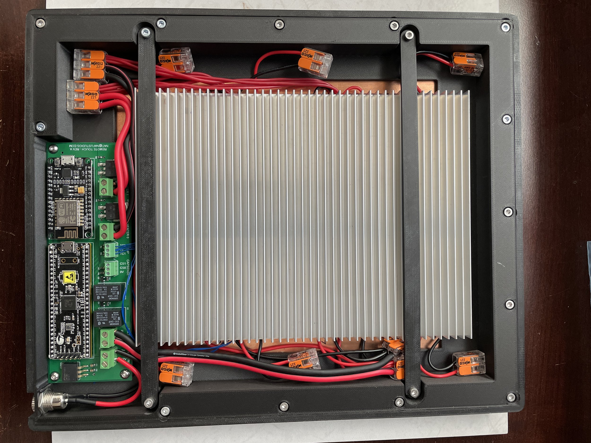
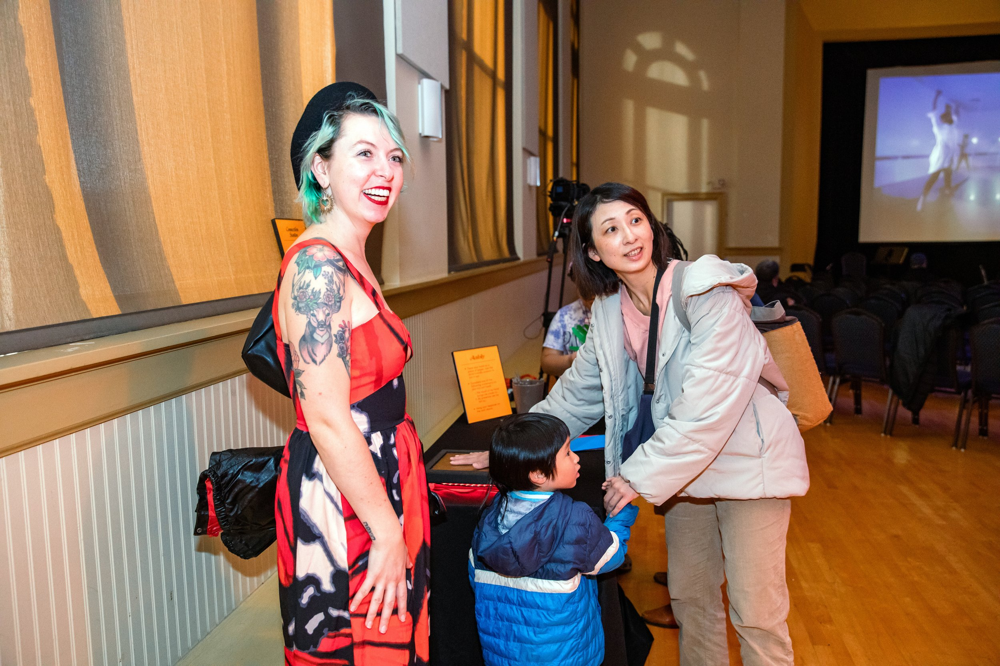
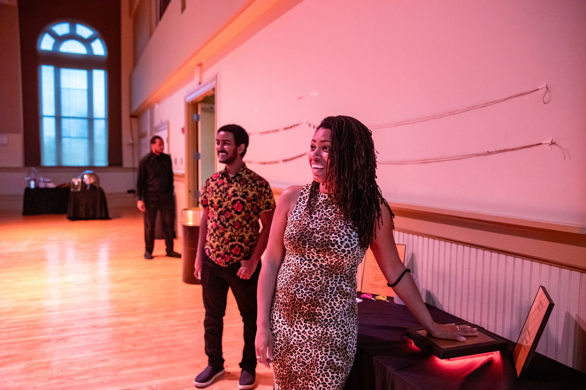
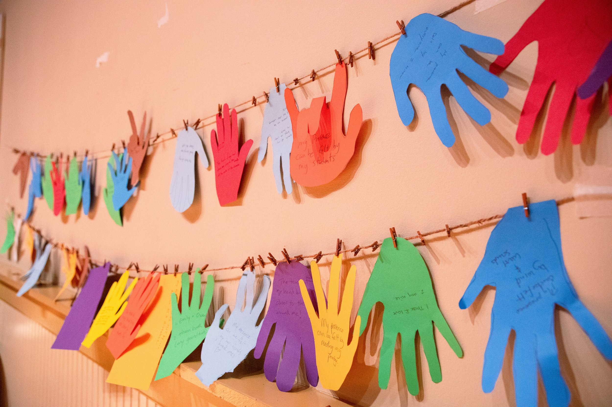

Remote Touch
Remote Touch is an art piece designed to connect people through touch no matter the distance between them.
The project consists of two frames that house a copper sheet with integrated electronics. When one person places their hand on a frame, the other frame warms up in response. Upon removing their hand, the other frame cools down.
This interaction allows participants to sense when another person is simultaneously touching a frame; feeling their warmth and sharing a moment together while apart.
Remote Touch was chosen to be a Connection Station at the show Belonging by Castle Of Our Skins on 11/5/2023.
Photo Credit: Lauren Miller




